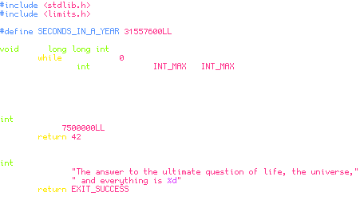

Gohufont
Click on the size you want to see:

Introduction
Gohufont is a monospace bitmap font well suited for programming and terminal use.
It is intended to be very legible and offers very discernable glyphs for all characters, including signs and symbols.
Here is what it looks like :

The small 11 px version is perfect for laptops and netbooks as it enables to fit more text into their small screens. The 14 px is ideal for desktop screens where you sit farther away from it and the 11 px would be too small.
Common characters
Here is a map of the most common characters :

Features
Legible
The most important goal of Gohufont is to be as legible as possible. Capitals and ascenders are tall, and rounded characters are very crisp thanks to small serifs.
Non-ambiguous
I wanted to make Gohufont's glyphs very different from one another, so that there could be no ambiguity.
The zero is dashed, l, I and 1 share no similarity, curly brackets are very distinct from parentheses, etc.
Here is the common "Illegal1 = O0" test :

Localized
It has all of the accented characters you could wish for.
Unicode
Each size is available in both unicode and latin1 (iso8859).
Bold
There is both a normal and a bold version, even for the 11 px one!
Sample
Code sample

Screenshot (11px)
See it here
{kind=link}
Download
Archives include both sizes of the font.
- In OTB (OpenType Bitmap) format: Download (recommended format for Linux distros)
- In compressed PCF format: Download (this format may be useful for older Linux distros)
- In BDF format: see the GitHub repository (this format allows modifications)
- If you happen to use Arch Linux, there is a gohufont-otb package in AUR
- There are OpenBSD and FreeBSD ports
- For Mac OS (.dfont), contributed by Michael Dwyer (thanks!): Download (unsupported)
- For Windows (.fon), contributed by Calvin Bienvenu (thanks!): Download (unsupported)
- TTF format, contributed by Jack Lindsay (thanks!): Download (unsupported)
- Another TTF conversion, by Guilherme Maeda (thanks!): GitHub (unsupported)
- For Amiga, contributed by Rasmus Edgar (thanks!): Aminet (unsupported)
License
It is released under the WTFPL and thus completely free.
Contact
